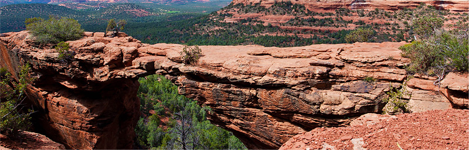

СЕДОНА - НЕБОЛЬШОЙ ГОРОДОК В АРИЗОНЕ, ЗАСЛУЖИВАЮЩИЙ БОЛЬШЕГО!
РАССМОТРИМ 5 ПРИЧИН, ПО КОТОРЫМ СЕДОНА КРУЧЕ, ЧЕМ ГРАНД КАНЬОН!
НАСТОЯЩИЙ ГОРОДОК
- №1 -СЕДОНА НЕ АТТРАКЦИОН ДЛЯ ТУРОСТОВ, ТАМ ТЕЧЕТ СВОЯ ЖИЗНЬ
-
ЖИЛЬЕ
РЕКОМЕНДУЕМ ПОЖИТЬ В НАСТОЯЩЕМ МОТЕЛЕ, ВСЕ КАК В КИНО!
-
ЕДА
ВСЕГДА ЗАКАЗЫВАЙТЕ ФИРМЕННЫЙ БУРГЕР, ВЫ НЕ РАЗОЧАРУЕТЕСЬ
-
СУВЕНИРЫ
НЕ ТОЛЬКО КИТАЙСКОГО,
НО И МЕСТНОГО ПРОИЗВОДСТВА!

ТАМ ЕСТЬ
- №2 -
ТАМ ЕСТЬ
МОСТ ДЬЯВОЛА
- №2 -
ДА, ПО НЕМУ МОЖНО ПРОЙТИ! ЕСЛИ ВЫ ОСМЕЛИТЕСЬ КОНЕЧНО
-
НЕБОЛЬШАЯ ПЛОЩАДЬ
- №3 -ВСЕ ИНТЕРЕСНОЕ НАХОДИТСЯ ОЧЕНЬ БЛИЗКО
-
КРАСИВАЯ ДОРОГА
- №4 -ЕХАТЬ В СЕДОНУ ИЗ ЛАС-ВЕГАСА СОВСЕМ НЕ СКУЧНО!
-
МАЛО ТУРИСТОВ
- №5 -БОЛЬШЕНСТВО ЕДЕТ В ГРАНД КАНЬОН И ТОЛПИТЬСЯ ТАМ